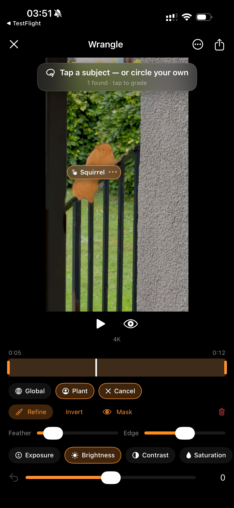

Wrangle
Grade a video like a photo — one subject at a time.
Tap or lasso a subject, then grade just it — or just the background. The mask tracks the subject as it moves. It all runs on the phone.
Join the TestFlight beta
iOS · free while in beta
Screenshots

What it does
Tap or lasso to pick a subject
Grade the subject, or invert for the background
Exposure, brightness, contrast, saturation
Feather and edge refinement, mask preview, before/after
In-app library picker with resolution badges
Export back to Photos